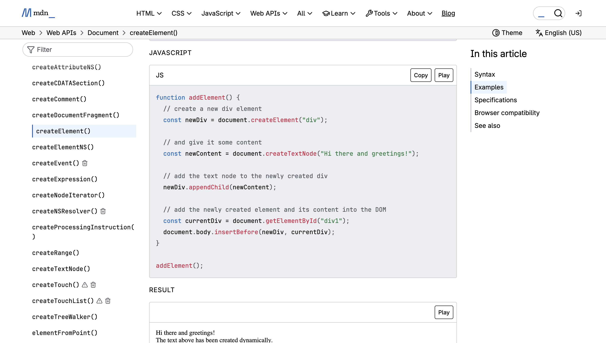

Technical Approach
I chose randomisation (Math.random()) as my advanced JavaScript
technique. This technique felt the most natural for bubbles because
it mirrors the unpredictability of their real-world behaviour.
The technique of randomisation is used in two key ways:
- To vary the size of the bubbles
- To vary the musical notes played
This creates a dynamic and engaging interaction where every click
produces a slightly different visual and audio result. Later on, I
will be implementing it to vary the colour of the bubbles produced
as well. The location of the bubble generated will not be randomised
as I believe it will not be an intuitive way of interacting.
FreeCodeCamp Bubble Tutorial
At first I used this tutorial as a point of reference but as I was
struggling to understand I sought advice on what would be an
easier method.
MDN createElement Documentation

This was the direction I was instead, suggested to pursue. I used
this as a guide to start building the webpage.
Bubble Generation
The bubbles are generated using a createElement() function. A new
element is created and styled via CSS, positioned at the cursor’s
coordinates. Each bubble is given a randomised size through
math.random(). Simultaneously, a random index is generated with both
math.floor and math.random to select a note from an array, in which
the audio is provided via Tone.js.
Feedback and Animation
The animation is handled though CSS transitions, which allows the
bubbles to float upward and fade out. After the animation completes,
a setTimeeout function removes the element from the page. This
prevents the canvas from being overwhelmed with inactive bubbles,
but for the final project I intend to keep bubbles onscreen until
they are interacted with.
As I endeavour to randomise the colours of the bubbles generated, I
may have to change the method in which the bubbles are generated, as
JS is more suited for this purpose.